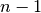
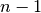

scipy.cluster.hierarchy.is_valid_im¶
- scipy.cluster.hierarchy.is_valid_im(R, warning=False, throw=False, name=None)[source]¶
Returns True if the inconsistency matrix passed is valid.
It must be a
 by 4 numpy array of doubles. The standard
deviations R[:,1] must be nonnegative. The link counts
R[:,2] must be positive and no greater than .
by 4 numpy array of doubles. The standard
deviations R[:,1] must be nonnegative. The link counts
R[:,2] must be positive and no greater than .Parameters : R : ndarray
The inconsistency matrix to check for validity.
warning : bool, optional
When True, issues a Python warning if the linkage matrix passed is invalid.
throw : bool, optional
When True, throws a Python exception if the linkage matrix passed is invalid.
name : str, optional
This string refers to the variable name of the invalid linkage matrix.
Returns : b : bool
True if the inconsistency matrix is valid.